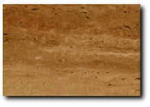
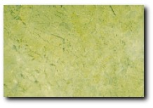

He aquí fichas técnicas con algunas de las cualidades especiales de nuestros mármoles.
Travertino Romano en Todas sus Versiones
El Travertino Romano es una de las piedras naturales más apreciadas en decoración y arquitectura. Con poro abierto y acabado pulido, produce un efecto rústico ideal para revestimientos. Con un tratamiento de resina transparente se puede potenciar el efecto brillante, que permite ver en profundidad la porosidad de esta clásica piedra. Cosentino es el primer fabricante mundial de plaqueta de travertino transparente. El acabado de poro tapado resulta más eficaz y duradero en suelos y revestimientos externos. La gama de plaquetas de Cosentino ofrece todas las versiones del Travertino Romano.
Perlado
Este es el último material incorporado a nuestra gama de piedras en mármol. Se trata de un auténtico mármol, de tono cremoso y se extrae en Cúllar (Granada/España). El perlado es un gran material para trabajos de elaboración (encimeras, chapados de gran dimensión, plaqueta de 60x30x1 cm, etc.). Clasificado por su tono resulta un material de gran belleza, pues rompe con la monotonía del marfil y es más claro que el beige serpiente.
Ficha Técnica de Perlado
El Perlado es una roca de color ámbar, con tonalidades entre crema claro y más oscuro. Estos tonos se disponen alternadamente en la roca, dándole un aspecto muy decorativo. La roca presenta un alto grado de cristalización, con orientación de los cristales.
Localización: El Perlado se extrae en la provincia de Granada, en el término municipal de Cúllar de Baza, en el paraje Las Vertientes. Esta roca se clasifica como un mármol, constituido por calcita principalmente y con anhídrido silícico y moscovita en menor proporción. El tamaño de grano de la roca es fino. Admite cualquier tipo de acabado superficial para este tipo de rocas y su utilización debe ceñirse a las normas internacionales para uso de mármoles.